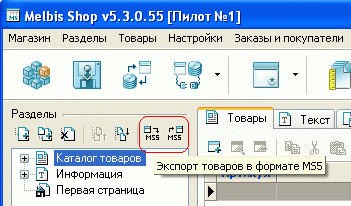
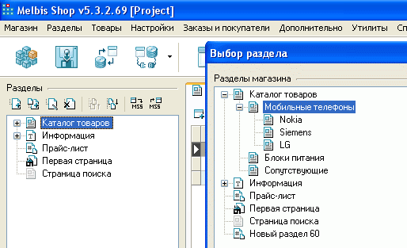
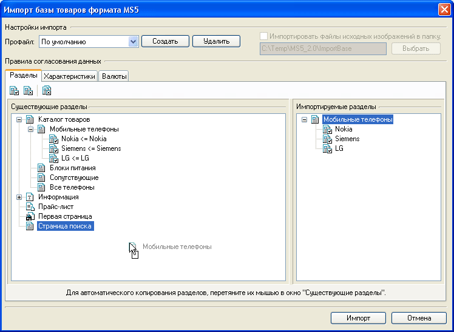

Формат MS5 (аббревиатура от Melbis Shop 5) разработан компанией Melbis для хранения и обмена информацией о товарах. Впервые формат был использован в пятой версии комплекса Melbis Shop.
Основное предназначение MS5 - ускорить запуск интернет-магазина, а также облегчить его сопровождение за счет сокращения времени на формирование товаров, путем разделения труда по занесению их в список среди нескольких сотрудников. Подробнее о формате можно прочитать на сайте компании.
Импорт/экспорт товаров в указанном формате можно осуществить, вызвав из главного окна "Магазин - Формат MS5" требуемый пункт меню или нажав соответствующую кнопку в левой части главного окна программы над деревом разделов.

Наличие этой функции также дает возможность обеспечить подготовку данных на нескольких машинах с тем, чтобы потом объединить их на одной.
При экспорте предлагается выбрать подлежащий экспортированию раздел (с возможными его подразделами):

после чего в появившемся окне следует задать имя файла, в который будут сохранены сведения о товарах раздела.
При импорте базы товаров формата MS5, после выбора файла с данными появится окно, в котором необходимо указать правила согласования импортируемых данных с уже имеющимися. Для согласования подлежат три типа данных: разделы магазина, характеристики товаров, валюты товаров. Схема согласования данных для всех трех типов одинаковая, поэтому рассматривается только пример для типа "разделы магазина":

Есть два способа согласования: по элементам и автоматический. Способ "по элементам" заключается в том, что выбирается существующий раздел (окно слева) и импортируемый раздел (окно справа) и нажимается кнопка "Связать разделы". Второй способ заключается в том, что вы просто перетягиваете необходимый импортируемый раздел (окно справа) в существующие (окно слева), при этом происходит автоматическое копирование и связывание разделов.
Если у вас есть разные поставщики товарной базы и импорт товаров происходит достаточно часто, то правила согласования можно сохранить в профайлах. Это позволяет разово согласовать повторяющиеся типы данных и затем использовать эти правила постоянно.